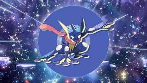

Actividad Complementaria
habia una vez....
Jheyson y Magnolia, dos brillantes profesores de un instituto de investigación espacial, descubrieron un fenómeno extraño en el espacio:
una grieta interdimensional. Mientras estudiaban este misterioso portal, un extraño suceso los llevó a un mundo paralelo, donde se encontraron con juanito y su fiel compañero Greninja de la serie Pokémon.

Juntos, emprendieron un viaje intergaláctico para buscar una solución y regresar a su dimensión original.
Durante su búsqueda, se encontraron con un joven llamado Taichi Yagam y su compañero digimon Agumon que estaban luchando contra fuerzas malignas en la galaxia.
.jpg)
Con la ayuda de los Digimon y sus valientes aliados, lograron enfrentarse a un enemigo común que amenazaba con destruir no solo su universo, sino también todos los demás.
Mientras luchaban, un destello de energía mágica atrajo la atención de Sailor Moon y sus amigas, quienes se unieron a la batalla con su poder para proteger la paz en el cosmos. Juntos, los héroes de diferentes mundos se unieron para formar una alianza poderosa y restaurar el equilibrio en el universo, cerrando la grieta interdimensional y regresando a sus respectivos mundos, llevando consigo la amistad que habían forjado en su aventura.
.jpg)